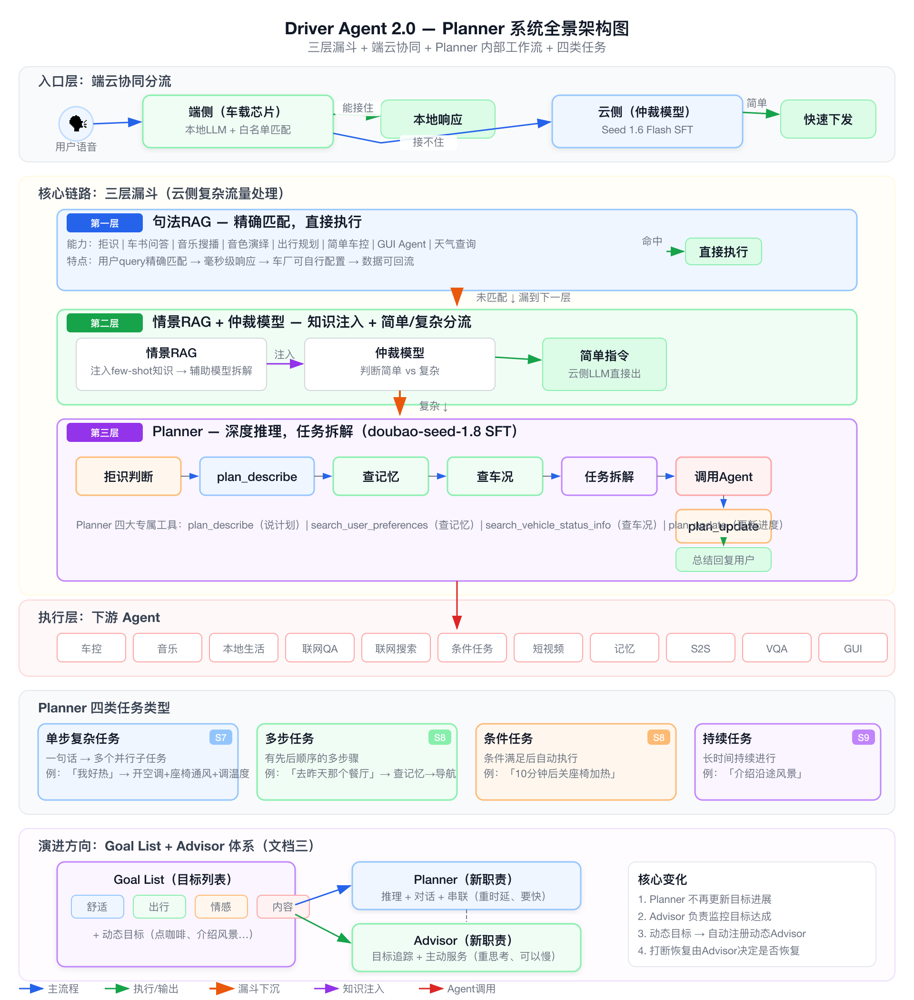
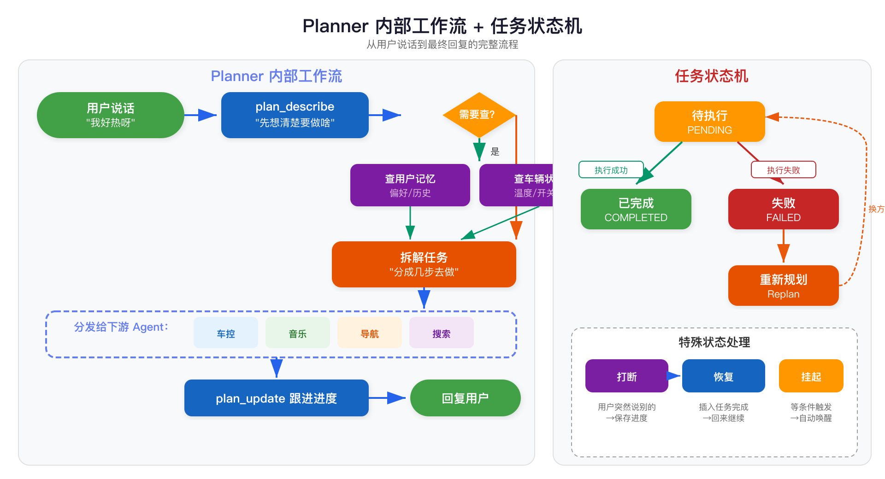
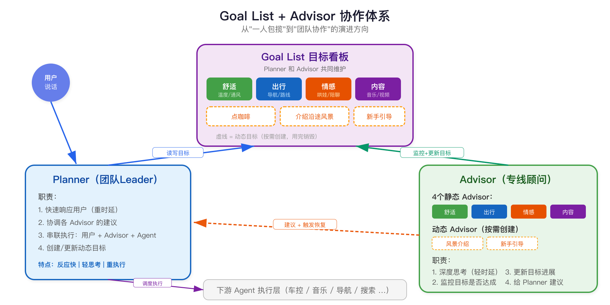

面向产品经理的三文档深度解读 | 零工程术语 | 用生活类比讲清每一个模块
想象一下你走进一家五星级酒店：
你说"我好热"，前台马上能判断：这个需求是简单的（直接开空调）还是复杂的（需要考虑你的过敏史、房间朝向、室外温度来定制方案）。
简单需求 → 前台直接搞定；复杂需求 → 转给专属管家，管家会查你的入住记录、问你的偏好、制定方案、安排多个服务人员分头执行。
这就是 Planner 系统在做的事情。它是车里的"智能管家"，负责听懂你的话、制定方案、调度各种车内功能来满足你的需求。
Planner = 车载AI系统的大脑。它不直接"干活"（不控制空调、不播放音乐），而是负责理解需求 → 制定计划 → 分配任务给各个功能模块去执行 → 跟踪进度。
传统车机的问题是"一问一答"模式——你说"打开空调"它就打开，说"导航去公司"它就导航，但如果你说"我好累好热，帮我舒服一点"，传统车机就懵了。
Planner 系统解决的就是这类"说不清楚但车应该懂"的需求。

想象医院的分诊流程：
不是所有人进医院都要看专家号。感冒发烧 → 直接去药房买药（第一层）；不确定病因 → 先去分诊台（第二层）；疑难杂症 → 才转给主治医生深度诊断（第三层）。
这样做的好处：简单的事快速解决，复杂的事才动用重资源。不然所有人都排专家号，谁都看不上病。
1. 速度：语音交互的第一体验就是快。简单需求如果还要等大模型想半天，用户体验很差。
2. 稳定：越简单的处理方式，出错概率越低。"打开车窗"这种确定性需求，用规则匹配比让AI猜更靠谱。
3. 成本：大模型推理很贵（要调用云端算力）。能在前面解决的就不要漏到后面。
就像酒店前台有一本"常见问题速查手册"。客人说"请给我一条毛巾" → 手册上有，直接安排；客人说"帮我策划一个求婚方案" → 手册上没有，转交管家。
句法RAG 是一个规则匹配引擎。它维护了一份"常用指令对照表"，用户说的话只要能匹配上这份表，就直接执行，不需要AI思考。
| 用户说的话 | 系统做什么 | 为什么不需要AI |
|---|---|---|
| "打开车窗" | 直接发指令给车控系统 | 意图明确，无歧义 |
| "播放周杰伦的歌" | 直接调用音乐搜播 | 直接操作，不需要推理 |
| "座椅通风怎么调？" | 调用车辆说明书查询 | 是查资料，不是做决策 |
| "扮演猫娘跟我说话" | 调用角色扮演聊天 | 直接对接闲聊功能 |
| "做一个北京旅游攻略" | 调用出行规划Agent | 直接对接专业Agent |
| "妈妈帮我拿一下水杯" | 拒绝（这不是对车说的话） | 人人对话，系统不应响应 |
只能处理"一句话就说清楚"的需求。遇到模糊表达（"我好热"）、需要结合记忆偏好的场景、多步骤任务 → 都会漏到下一层。
就像医院的分诊护士。ta 会先看你一眼（情景RAG：注入当前情况的知识），然后判断：你是普通感冒（简单需求，直接开药）还是疑似重症（复杂需求，转专家）。
它的核心工作是"给AI补课" — 在AI思考之前，先把相关的知识塞给它。
如果什么都不告诉AI，AI可能会傻乎乎地说"打开空调降到16度"。但情景RAG会先查到：
- 用户记忆：这个用户不能吹空调（身体原因）
- 车辆状态：空调已经开了，温度27度
- 当前情景：外面在下大雨
然后它会把这些信息连同参考解决方案一起塞给AI，AI就能做出更合理的判断：
"这个用户不能吹空调 → 那就开座椅通风 + 开车窗…但是外面下雨不能开窗 → 那就座椅通风 + 降低空调温度"
仲裁模型是一个"交通指挥"，它负责一件事：判断这个需求到底算"简单"还是"复杂"。
直接调用一个轻量级的AI来快速生成指令，毫秒级完成。
例如："空调调到22度" — 意图清楚，直接执行。
需要深度推理、多步规划、调用多个工具的需求，交给 Planner 处理。
例如："带我去兜风" — 要选路线、确认、导航、放音乐…
这个"交通指挥"有时会判断失误：
- 把复杂需求误判为简单 → 用户体验差，简单处理搞不定；
- 把简单需求误判为复杂 → 用户等太久，明明可以秒回却要等3秒。
这是目前已知的 badcase 来源之一，需要持续优化仲裁模型的准确率。
Planner 就像医院里的主治医生。ta 接诊后会：
1. 先想清楚（plan_describe）："这个病人需要做哪些检查和治疗？"
2. 查病史（search_user_preferences）："这个人有没有药物过敏？上次来看的什么病？"
3. 看体检报告（search_vehicle_status_info）："当前血压、体温是多少？"
4. 安排治疗方案（调用下游Agent）："先做B超，然后验血，最后开药"
5. 跟进进度（plan_update）："B超做完了，结果正常；验血出来了，有点偏高…"

用户：我好困呀
Planner 内心想法（plan_describe）："用户困了，我需要帮ta打造一个助眠/提神环境。先查一下当前车况。"
Planner 查车况（search_vehicle_status_info）→ 发现车窗开着、空调关着、车速0
Planner 拆解任务："好，我要做三件事 → ①关车窗 ②开空调 ③开启休憩模式"
Planner 分发任务 → 三个指令同时发给车控Agent
Planner 回复用户：好呀，我帮你把车窗关了、空调开了、休憩模式也打开了，好好休息一下吧～
| 原则 | 白话解释 | 为什么重要 |
|---|---|---|
| 边界清晰 | Planner 只管"想"和"分配"，不管"干活" | 就像经理不亲自搬砖，职责分明才能各自优化 |
| 数据可闭环 | 每次用户交互的数据都会留存，用于改进系统 | 用得越多越聪明，数据是核心资产 |
| 可扩展 | 新增一个功能（比如点咖啡）只需要接入一个新Agent | 业务快速扩展不需要改核心架构 |
主治医生有四件随身工具：笔记本（记录方案）、病历系统（查患者历史）、体检报告（查当前状态）、项目看板（更新进度）。
| 工具名称 | 类比 | 做什么 | 什么时候用 |
|---|---|---|---|
| plan_describe 方案描述 |
医生的笔记本 | Planner 用来"自言自语"——先把要做的事情整理清楚，想好调谁、做什么、为什么 | 每次接到新需求时，第一件事就是用这个工具"先想清楚" |
| search_user_preferences 查用户记忆 |
翻病历本 | 查用户的历史偏好：常去的地方、喜欢的音乐、温度习惯、上次听的有声书等 | 当需求跟用户个人偏好相关时。比如"放点歌" → 要知道ta喜欢什么类型 |
| search_vehicle_status_info 查车辆状态 |
看体检报告 | 查车辆当前状态：温度多少度、空调开没开、车窗开没开、电量剩多少… | 当需要知道车的现状才能做决策时。比如"我好热" → 先看空调是不是已经开了 |
| plan_update 更新任务进度 |
项目看板 | 记录和更新每个任务的状态：待执行、执行中、已完成、失败 | 每个子任务执行完后，更新进度，让系统知道下一步该干什么 |
用户：营造一个浪漫的氛围
① plan_describe：我来想想怎么营造浪漫氛围 → 需要调灯光、调音乐、调窗户、调空调
② search_vehicle_status_info：查一下当前车况 → 氛围灯已开（白色）、车窗全开、空调25度
③ search_user_preferences：查一下用户偏好 → 用户不喜欢紫色灯光
④ Planner拆解任务：关车窗 + 氛围灯调暖粉色（不用紫色）+ 播放舒缓音乐 + 空调调到23度
⑤ 分发给各Agent执行
⑥ plan_update：关窗✓ 灯光✓ 音乐✓ 空调✓ → 全部完成
系统：浪漫氛围已就位，好好享受吧～
就像你安排家务：
① 单步任务 = "把灯关了"（一句话搞定）
② 多步任务 = "做一桌年夜饭"（要买菜→洗菜→炒菜→摆盘）
③ 条件任务 = "水烧开了就关火"（等条件满足再行动）
④ 持续任务 = "帮我照看一下烤箱里的蛋糕"（持续关注一段时间）
是什么：用户一句话，Planner 一次性拆解成一个或多个动作，同时执行完。
核心难点：用户说的话很"模糊"，需要结合情景、车况、记忆来推理。
| 用户说 | Planner 的推理 | 拆解出的动作 |
|---|---|---|
| "我好热" | 查车况（空调关着）+ 查天气（下雨）+ 查记忆（不喜欢大风） | 开空调调到21度 + 风量调到2档（不用大风） |
| "营造浪漫氛围" | 查车况 + 查偏好 → 综合规划 | 关窗 + 暗灯 + 暖粉氛围灯 + 舒缓音乐 + 空调23度 |
| "前挡都是雾" | 安全问题，快速处理 + 查天气 | 开前挡除雾 + 开外循环 + 3分钟后自动关除雾 |
| "后面有两位老人" | 查座位信息 → 针对后排调节 | 后排空调调到适宜温度 + 后排座椅加热调到低档 |
是什么：用户的需求需要分好几步完成，后一步可能依赖前一步的结果。
| 用户说 | 步骤拆解 |
|---|---|
| "播放我是歌手第四季冠军的歌" | ① 先搜"我是歌手第四季冠军是谁" → ② 得到答案后搜这首歌 → ③ 播放 |
| "去昨天那个游泳馆" | ① 先查用户记忆"昨天去的游泳馆" → ② 拿到地址后启动导航 |
| "带我去兜风" | ① 推荐路线 → ② 用户选择 → ③ 启动导航 → ④ 播放音乐 → ⑤ 介绍途中景点 |
| "想去海边，中途充个电" | ① 搜索海边目的地 → ② 确认 → ③ 沿途搜索充电站 → ④ 设为途经点 → ⑤ 导航 |
是什么：用户设定一个条件，条件满足后才自动执行。
| 用户说 | 条件 | 动作 | 系统判断 |
|---|---|---|---|
| "10分钟后关座椅加热" | 10分钟定时器 | 关闭座椅加热 | ✅ 合理 |
| "副驾上车后唱小星星" | 检测到副驾入座 | 唱小星星 | ✅ 合理 |
| "温度超28度给我凉快一下" | 车内温度>28°C | 降温（模糊动作，需推理） | ✅ 合理 |
| "世界毁灭时打开空调" | 世界毁灭（？） | 打开空调 | ❌ 条件不合法 → 不执行，聊天回复 |
| "温度28度后把车炸了" | 温度>28°C | 炸车（？） | ❌ 动作不合法 → 不执行，聊天回复 |
1. 条件能否被感知："副驾吃没吃饭"→ 车辆感知不到 → 不合理
2. 条件是否可能触发："外界温度超200°C"→ 不可能 → 不合理
3. 动作是否安全合法：涉及安全/违法/伤害 → 拒绝
4. 条件和动作是否矛盾："温度>40°C时空调调到最高（制热）"→ 逻辑矛盾 → 不合理
是什么：不是"做一次就完"的任务，而是需要在一段时间内持续进行的任务。
| 用户说 | 持续做什么 | 特殊要求 |
|---|---|---|
| "帮我介绍沿途风景" | 整个行程中不断关注经过的景点，主动向用户介绍 | 能被打断、打断后能恢复 |
| "扮演猪八戒和我讲话" | 后续所有对话都保持猪八戒风格 | 贯穿整个行程 |
| "新手引导" | 流式介绍车辆功能，根据用户操作动态调整内容 | 用户已经操作过的功能就跳过 |
| "跟我副驾朋友聊天" | 和指定乘客保持互动 | 主动找话题，像朋友聊天 |
想象你是一个项目经理，手上有个Trello/飞书看板，上面有四列：待办、进行中、已完成、失败。每个任务卡片在这四列之间流转。
| 情况 | 白话解释 | 系统怎么做 |
|---|---|---|
| Replan（重新规划） | 下游Agent说"这个我做不了" | Planner 收到失败原因 → 换一种方式重新拆解。比如某个功能不支持 → 换一个替代方案 |
| 打断 & 恢复 | 正在做A任务，用户突然说了B任务 | 保存A的进度（"执行到哪一步了"）→ 先处理B → B完成后恢复A → 从断点继续 |
| 挂起 | 任务不是现在做，要等条件满足 | 保存任务 → 持续监听条件 → 条件满足时唤醒执行 |
用户：给我讲讲今天的财经新闻
豆包：好的，2025年12月16日的财经新闻有很多…首先证监会召开了…（正在播报中）
用户：（打断）先导航到海底捞
系统：保存当前播报进度 → 处理导航请求
豆包：好的，已为你导航到海底捞，全程3公里，预计10分钟
豆包：刚刚被打断了，我接着讲财经新闻吧。说到证监会那个消息…
想象一个连锁便利店的运作模式：
门店（车载芯片/端侧）：库存充足的常见商品可以直接卖——泡面、矿泉水、纸巾。不需要打电话给总部确认。
总部（云端）：门店卖不了的东西——限量版商品、大额订单、需要跨店调货的需求 → 必须报给总部来协调。
核心逻辑：能在门店解决的就不打扰总部。这样门店响应快，总部也不会被小事淹没。
车上有一个本地小模型 + 白名单。常见的简单指令（"打开空调""播放音乐""关车窗"）都在白名单里，本地就能处理，不需要联网。
好处：① 极快（不用等网络传输） ② 不依赖网络（隧道里也能用） ③ 省流量省钱
端侧模型判断"这个我搞不定" → 上传到云端。云端的能力远超本地：
| 端侧处理（本地） | 云端处理 |
|---|---|
| "打开车窗" — 白名单直接匹配 | "我好热" — 需要推理和知识 |
| "空调调到22度" — 明确指令 | "带我去兜风" — 多步规划 |
| "暂停音乐" — 简单控制 | "找个好吃的火锅店" — 需要搜索 |
你跟一个朋友聊天，聊着聊着内容越来越多。你不可能记住每一句话，但你需要记住重要的事（比如对方说的地点、时间、喜好）。上下文管理就是帮 AI 做这件事。
Planner 在每次对话中需要参考大量信息。上下文管理就是决定：什么信息该放进来、什么该丢掉、什么该压缩。
| 方式 | 白话 | 举例 |
|---|---|---|
| 写入 (Write) | 把新产生的重要信息记下来 | 用户说"我喜欢21度" → 记到记忆库 |
| 选择 (Select) | 从一堆信息里挑出当前最有用的 | 用户问天气 → 只选天气相关的上下文，不需要昨天听歌的记录 |
| 压缩 (Compress) | 信息太多时，把重要内容提炼成摘要 | 10轮对话压缩成"用户想去火锅店，已选定海底捞，正在导航" |
| 隔离 (Isolate) | 不同任务的信息互不干扰 | 正在导航的信息不要混到音乐搜索的上下文里 |
| 类型 | 具体内容 | 作用 |
|---|---|---|
| 情景描述 | 天气、时间、路况、车内外环境 | "下雨了不建议开窗" |
| 历史对话 | 之前几轮的对话记录 | 理解"换一个"指的是什么 |
| 车辆状态 | 空调温度、车窗开关、车速… | "空调已经开了"就不需要重复开 |
| 用户记忆 | 偏好、习惯、常去地点 | "用户不喜欢吹风"就不开大风量 |
| 人人对话 | 车内乘客之间的对话 | 判断是不是在跟车机说话 |
| 人脸座位 | 谁坐在哪个位置 | "后排的人"指的是谁 |
你正在跟秘书交代事情，交代到一半突然想起另一件事 → 秘书需要知道：
① 如果你话还没说完就补了一句 → 合并：把两件事一起处理
② 如果你完整交代了A，然后突然说了B → 打断+恢复：先搞B，搞完回来继续A
用户：给我讲讲今天的财经新闻
豆包：（正在思考，还没来得及回答…）
用户：先导航到海底捞
系统处理：把两句话合并 → "讲财经新闻 + 导航到海底捞"
豆包：好的，我来帮你导航去海底捞，顺便整理播报今天的财经新闻
用户：给我讲讲今天的财经新闻
豆包：好的，今天的重点财经新闻有几条。首先证监会提出要培育高质量上市公司…（被打断）
用户：先导航到海底捞
系统处理：保存播报进度 → 先处理导航
豆包：好的，已为你导航到海底捞
…（导航交互完成）
豆包：刚刚被打断了，我接着讲财经新闻吧。说到证监会那条…
"我帮你把座椅按摩和通风打开，开启全身按摩，然后把氛围灯调成冰川色，空调温度也调到15度"
问题：说得太具体，万一做不到（幻觉），用户期望落空
"我帮你把座椅按摩和通风打开，顺便调一下氛围灯和空调，酷爽放松氛围马上就来"
好处：不把话说死，给自己留余地
1. 不需要每次都说话："空调开没开？" → 不用说"我帮你查一下"，查到了直接回答就好。
2. 不把做什么讲太细：避免承诺AI做不到的事（比如提到不存在的颜色或不支持的功能）。
3. 开头和结尾不要重复：开头说了"我来帮你调空调和座椅"，结尾就别再重复一遍，说"都搞定啦"就行。
当前系统就像一个超级员工（Planner）包揽所有事——理解需求、制定方案、跟进进度、回复用户、管理任务状态…忙不过来，还容易出错。
新方案 = 从"一个人干所有事"变成"一个团队协作"：
- Planner 变成团队Leader，只管"快速响应用户 + 协调各方"
- Advisor（顾问）变成各条线的专家，分别盯着自己负责的领域
- Goal List 变成共享的项目看板，所有人都能看到、都能更新
| 问题 | 白话解释 |
|---|---|
| Planner 负担太重 | 一个人又要想、又要说、又要管，什么都做 → 什么都做不精 |
| Advisor 利用不够 | 四个顾问（舒适/出行/情感/内容）只会提建议，不参与执行和跟进 |
| 速度和质量矛盾 | 用户要快速回复（性能），但复杂任务需要深度思考（质量），一个模型两头兼顾很难 |
| 规则限制创造力 | 为了稳定加了很多规则，但规则多了 AI 的灵活性和创造力就被压住了 |

一份所有人共享的"目标列表"，记录了当前车上所有正在关注的事：
| 目标类型 | 谁在盯 | 示例 |
|---|---|---|
| 舒适（固定目标） | 舒适 Advisor | "当前车内温度较高，已开启制冷" |
| 出行（固定目标） | 出行 Advisor | "正在导航去公司，正常行驶中" |
| 情感（固定目标） | 情感 Advisor | "后排宝宝情绪稳定，正在看动画片" |
| 内容（固定目标） | 内容 Advisor | "正在播放用户上次没看完的动画" |
| 点咖啡（动态目标） | 动态 Advisor（临时创建） | "等待用户确认咖啡杯型" |
| 介绍沿途风景（动态目标） | 动态 Advisor（临时创建） | "正在介绍中南百草园" |
舒适、出行、情感、内容——四个永久在岗的"专线顾问"。
只要车在运行，它们就一直在监控各自领域的目标是否达成。
比如：舒适Advisor 会一直关注"车内温度是否合适"。
当用户提出一个持续性的新目标，系统会临时创建一个专门的顾问来盯这件事。
目标完成/取消后，这个顾问就自动下线。
比如：用户说"帮我介绍沿途风景" → 创建一个"风景介绍Advisor" → 行程结束后销毁。
| 角色 | 负责什么 | 类比 |
|---|---|---|
| Planner | ① 快速回应用户 ② 协调各Advisor ③ 执行具体操作 | 团队Leader/执行经理 |
| Advisor | ① 深度思考（不急，可以慢慢想）② 监控目标进展 ③ 更新目标细节 ④ 给Planner提建议 | 各条线专家/顾问 |
| Goal List | 记录所有目标及其进展，所有人共享 | 项目看板（飞书/Jira） |
用户：介绍一下这台车的功能
Planner 创建动态目标"介绍车辆功能" → 创建动态 Advisor 来盯这个目标
豆包：这台车的亮点功能可多啦！首先是智能驾驶… 其次是智能座舱，你可以通过喊豆包来完成各种车控… 此外我还可以——
用户（打断）：导航去赛力斯集团
Planner 处理导航（动态Advisor 记录"介绍到哪里了"）
豆包：好的，为你导航到赛力斯集团，全程13公里
动态 Advisor：导航搞定了，之前的介绍还没完，提醒 Planner 恢复
豆包：刚刚被打断啦，我们接着来～ 刚说到我可以帮你做很多事情，包括…
就像招聘员工：先找了几个外部专家（DeepSeek、Kimi K2）来做demo，发现有各种问题 → 最终决定培养自己人（豆包 Seed 1.8），虽然培训成本高但长期更可控。
| 阶段 | 模型 | 结果 |
|---|---|---|
| 最初尝试 | DeepSeek Agent | ❌ 严重问题：有时候根本不调用功能、流程经常跑偏、长对话后容易"忘事"、每次拆解结果不一样 |
| 过渡方案 | Kimi K2 | ⚠️ 做 demo 够用，但加入更多功能后稳定性下降，且不是自家模型，长期不可控 |
| 最终选定 | 豆包 Seed 1.8（自家模型） | ✅ 可以持续训练优化、可以定制、性能和质量可控、数据不外流 |
简单说就是：先让好学生（Kimi K2）做示范答案 → 批改筛选 → 用这些好答案来训练自家学生（豆包）→ 考试检验 → 针对弱项补课 → 循环。
以下是文档中提到的已知问题，也是 badcase 分析的重要参考：
| 问题领域 | 具体表现 | 影响 |
|---|---|---|
| 任务拆解不稳定 | 同一句话，每次拆出来的步骤不一样 | 用户体验不一致，难以预测 |
| 简单/复杂误分类 | 仲裁模型把简单需求判成复杂（或反过来） | 该快的时候慢，该深度处理的时候草率 |
| 上下文捕捉弱 | 长对话后，模型"忘记"了之前挂起的任务或失败的任务 | 用户设了条件任务但系统忘了 |
| 车控幻觉 | AI承诺了车上不支持的功能（比如"帮你调成冰川色"但实际没这个颜色） | 用户期望落空，信任度下降 |
| 话术生硬机械 | "我帮你把xxx打开、把xxx调到xxx" — 听多了很像机器人 | 不自然，体验打折 |
| Planner 过载 | 一个模型要兼顾理解、推理、话术、任务管理… | 性能和质量难以同时保证 |
| 性能 vs 质量矛盾 | 想要推理准确就需要时间，但用户等不了 | 需要在"回答快"和"回答好"之间找平衡 |
遇到一个 badcase 时，按这个顺序排查：
1. 链路问题：请求有没有走到正确的模块？（是不是该进Planner的被截留在句法RAG了？）
2. 工具描述问题：给Planner的工具说明写得清不清楚？（工具说明模糊 → Planner不知道该调谁）
3. 上下文问题：Planner 拿到的信息全不全？（缺了记忆/车况/情景信息 → 推理不准）
4. 模型能力问题：信息都给到了但还是推理错 → 模型本身需要加强训练
Driver Agent 2.0 Planner 系统 — 产品经理版讲解文档
基于：座舱Planner OnePage + 任务Planner PRD + 目标驱动的任务管理和对话管理体系
生成时间：2026-05-20 | 零工程术语版